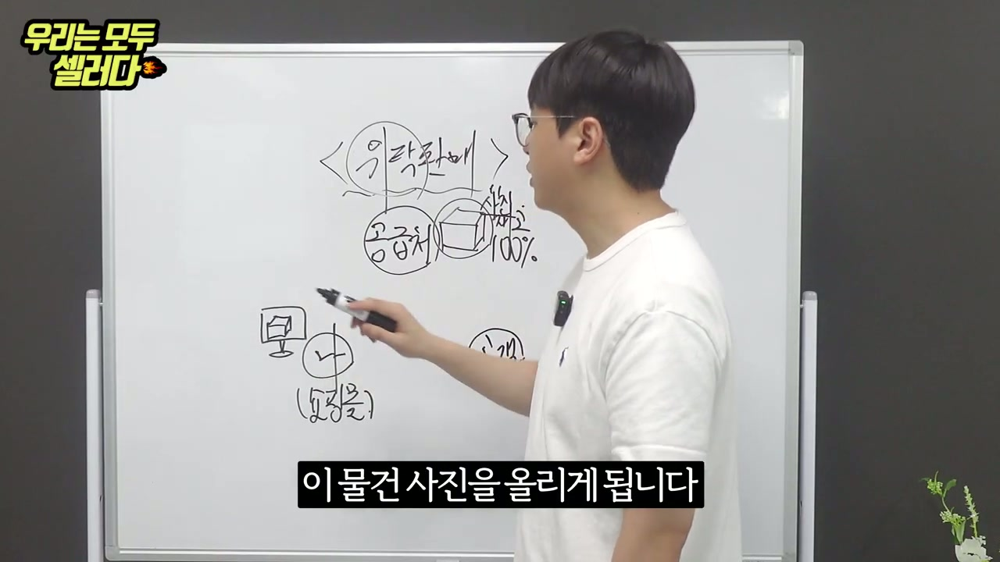
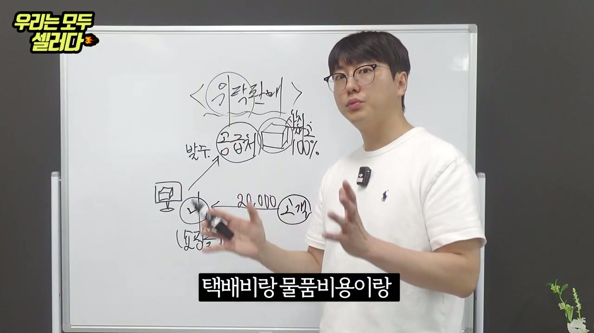
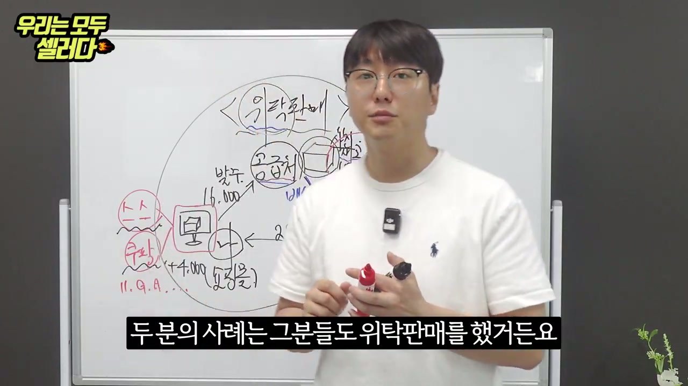
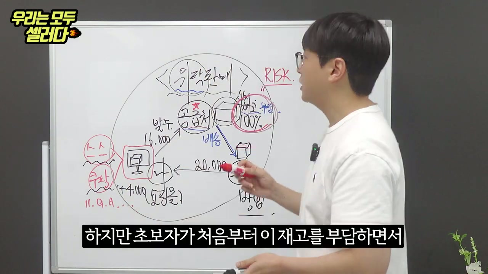
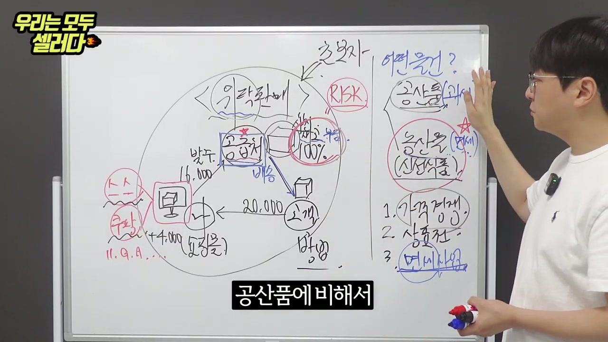
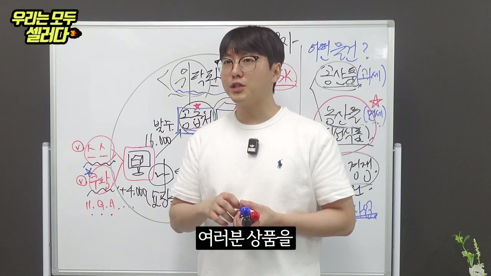
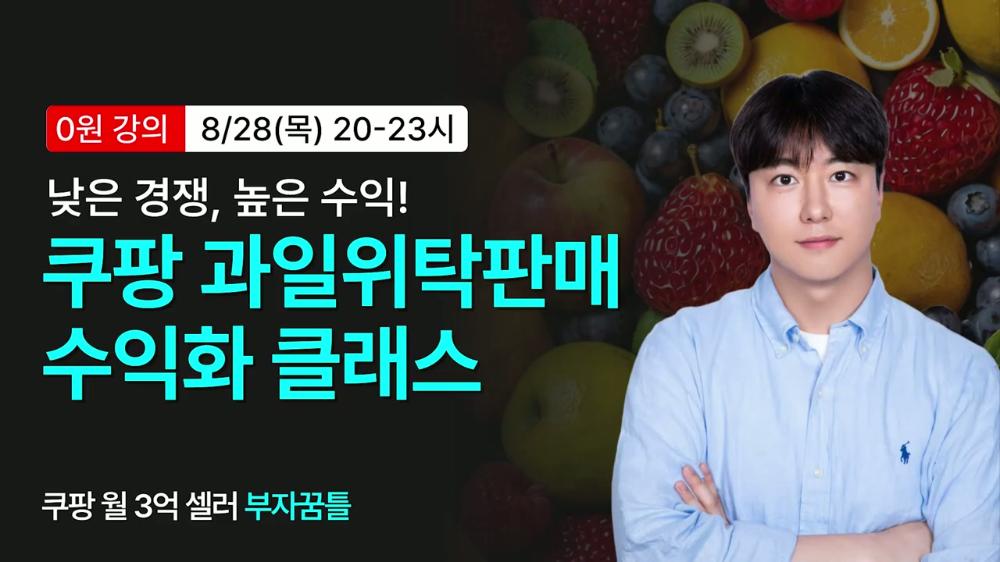

모든 스크린샷을 확인했습니다. 이제 종합적인 분석 보고서를 작성하겠습니다.
채널: 우모셀, 우리는 모두 셀러다 | 길이: 19:11 | 날짜: 20250826
핵심 내용
- 위탁판매는 재고 부담 없이 시작할 수 있는 온라인 셀러 입문 방식이다. 공급처에서 상품을 직접 사입하지 않고, 주문이 들어오면 공급처가 고객에게 직접 배송하는 구조로, 초보자가 리스크 없이 시작할 수 있는 가장 현실적인 방법이다. 발화자 본인도 위탁판매로 시작하여 24억원의 매출을 달성한 경험이 있다.
- 위탁판매의 수익 구조는 고객 판매가에서 공급처 발주가(물품비용 + 택배비)를 뺀 마진이며, 여기에 플랫폼 수수료가 추가로 차감된다. 예시로 고객이 20,000원에 구매하면, 공급처 발주가 16,000원(물품비 + 택배비)을 제외한 4,000원이 마진이고, 여기서 스마트스토어, 쿠팡, 11번가, G마켓, 옥션 등 플랫폼 수수료가 빠진다.
- 위탁판매 상품은 크게 공산품과 농산물(신선식품)로 나뉘며, 초보자에게는 농산물 위탁판매를 강력히 추천한다. 공산품은 가격경쟁이 치열하고, 상품전이 불리하며, 공급처 사진을 그대로 사용하므로 차별화가 어렵다. 반면 농산물은 가격경쟁에서 자유롭고, 면세 혜택이 있으며, 공급처가 소수여서 독과점 시장을 형성하기 유리하다.
- 공산품 위탁판매의 3가지 핵심 문제점은 (1) 가격경쟁, (2) 상품전(상세페이지 경쟁), (3) 공급처 사진 사용 제한이다. 같은 공급처에서 같은 상품을 가져오기 때문에 셀러 수천 명이 동일 상품을 판매하게 되어 가격 출혈경쟁이 불가피하다. 상세페이지도 공급처에서 제공하는 동일한 사진을 사용하게 되어 차별화가 불가능하다.
- 농산물 위탁판매는 과세 대상이 아닌 면세 품목이어서 부가세 부담이 없고, 롤링 시스템 덕분에 신규 셀러도 기회를 얻을 수 있다. 공산품은 매출에서 부가세가 나가고 소득세가 나가서 통장에 돈이 안 모이지만, 농산물은 면세여서 세금 부담이 크게 줄어든다. 또한 쿠팡의 롤링 시스템은 상위 판매자가 독점하지 않도록 순환(Roll)을 통해 기회와 부담을 분산시키는 구조이다.
- 발화자는 쿠팡 월 3억 셀러 '부자꿈틀'이 진행하는 "쿠팡 과일위탁판매 수익화 클래스"(0원 강의, 8/28 목 20~23시)를 홍보하며, 고정 댓글에 신청 링크가 있다고 안내한다. 9월에 잘 팔리는 과일 리스트도 제공한다고 언급한다.
상세 분석
1. 인트로 및 발화자 소개 [0:00 ~ 1:16]
영상은 "우리는 모두 셀러다(우모셀)" 채널의 진행자가 화이트보드 앞에서 강의하는 형식으로 시작된다. 진행자는 흰색 폴로 랄프 로렌 티셔츠를 입고, 안경을 쓴 젊은 남성이다. 손에 DJI 마이크를 들고 있다.
진행자는 자신이 위탁판매로 24억원의 매출을 달성했다고 밝힌다. 이 영상에서 위탁판매에 대해 "하나부터 열까지 다 알아가실 수 있으니까" 끝까지 시청해달라고 요청한다. 쿠팡, 스마트스토어 초보 셀러를 대상으로 위탁판매의 개념부터 실전 전략까지 설명하겠다는 것이 영상의 목적이다.
2. 위탁판매의 기본 개념 설명 [1:16 ~ 2:33]
진행자는 화이트보드에 "<위탁판매>" 라고 제목을 쓰고, 위탁판매의 구조를 그림으로 설명하기 시작한다. "첫 번째는 나구요"라고 말하며 구조의 핵심 주체들을 소개한다.
위탁판매의 핵심 구조:
- 공급처: 상품을 보유하고 있는 업체. 상품 사진과 상품 정보를 100% 제공한다.
- 나(셀러): 공급처로부터 받은 상품 사진과 정보를 온라인 플랫폼(스마트스토어, 쿠팡 등)에 올린다.
- 고객: 셀러가 등록한 상품을 보고 주문한다.
위탁판매의 핵심 흐름은 다음과 같다:
- 공급처가 셀러에게 상품 사진과 정보를 제공한다
- 셀러가 이 물건 사진을 온라인에 올리게 된다
- 고객이 주문하면 셀러가 공급처에 발주를 넣는다
- 공급처가 고객에게 직접 배송한다 (셀러가 직접 배송하지 않음)
화이트보드에는 "공급처" 원, "상품 사진 100%" 표시, 모니터 아이콘(온라인 스토어), "고객" 원이 화살표로 연결되어 있다. "발주"라는 글씨가 셀러→공급처 방향으로, "배송"이라는 글씨가 공급처→고객 방향으로 표시되어 있다.
위탁판매 기본 구조 - 화이트보드 첫 번째 그림

위탁판매 구조 상세 - 공급처, 상품 사진, 배송 흐름
3. 위탁판매의 수익 구조(마진 계산) [2:33 ~ 3:50]
진행자는 구체적인 수치를 들어 마진 구조를 설명한다.
수익 구조 예시:
- 고객이 20,000원에 상품을 구매한다
- 셀러가 공급처에 발주할 때 지불하는 금액은 16,000원 (물품비용 + 택배비)
- 따라서 마진은 4,000원 (= 20,000 - 16,000)
- 이 4,000원이 "요정도"의 마진이라고 표현
화이트보드에는 "← 20,000" (고객→셀러), "발주 16,000→" (셀러→공급처), "+4,000 (요정도)" 라고 마진이 표기되어 있다. "택배비랑 물품비용이랑"이라는 자막이 표시되며, 발주가에 택배비와 물품비용이 모두 포함되어 있음을 강조한다.

마진 구조 설명 - 20,000원 판매, 16,000원 발주, 4,000원 마진
4. 판매 플랫폼과 수수료 구조 [3:50 ~ 5:06]
진행자는 "판매를 해야 되잖아요"라며, 실제 판매가 이루어지는 플랫폼들을 빨간색 마커로 화이트보드 왼쪽에 적는다.
주요 판매 플랫폼:
- 스스 (스마트스토어) - 네이버 스마트스토어
- 쿠팡
- 11번가 (11.9.A...)
- G마켓
- 옥션
- 기타 여러 플랫폼
"G마켓도 있고 옥션도 있고"라며 다양한 플랫폼에서 동시에 판매할 수 있음을 언급한다. 이 플랫폼들은 모두 모니터 아이콘 옆에 표기되어 있으며, 셀러가 하나의 상품을 여러 플랫폼에 동시 등록하여 판매할 수 있는 구조임을 보여준다.
또한 진행자는 "두 분의 사례는 그분들도 위탁판매를 했거든요"라며, 이전에 소개된 성공 사례들도 위탁판매 방식이었음을 언급한다. 이는 위탁판매가 실제로 성과를 낼 수 있는 방법임을 증명하기 위한 발언이다.

판매 플랫폼 목록 - 스마트스토어, 쿠팡, 11번가, G마켓, 옥션
5. 위탁판매의 리스크와 초보자 적합성 [5:06 ~ 6:23]
진행자는 화이트보드 오른쪽 상단에 빨간색으로 "RISK"라고 크게 적으며, 위탁판매의 리스크에 대해 설명한다.
위탁판매의 기본적 리스크:
- 위탁판매는 기본적으로 재고를 쌓아두고 판매하는 것이 아니다
- 공급처에 별표(★)를 치며 강조: 공급처가 상품을 보유하고 배송까지 담당
- 100% 상품 정보와 사진을 제공받아 올리는 구조
- "배송"도 공급처가 담당 (파란색으로 강조)
초보자에게 위탁판매를 추천하는 이유:
- "하지만 초보자가 처음부터 이 재고를 부담하면서" 시작하기는 어렵다
- 위탁판매는 재고 부담이 없으므로 손해를 보지 않는 구조
- 팔리면 마진이 남고, 안 팔려도 재고 손실이 없다
- 방어(방어적 리스크 관리)가 가능한 구조
화이트보드에는 공급처와 상품(100%), 배송 흐름이 빨간색 원으로 강조되어 있고, "RISK"가 오른쪽 상단에, "방어"라는 글씨가 하단에 적혀 있다.

위탁판매 RISK 설명 - 재고 부담 없는 구조
6. 어떤 물건을 팔 것인가? - 공산품 vs 농산물 [6:23 ~ 8:18]
진행자는 화이트보드 오른쪽에 파란색 마커로 "어떤 물건?"이라는 질문을 크게 쓴다. "저는 2가지로 구별이 될 수 있다고 생각을 해요"라고 말하며 두 가지 카테고리를 제시한다.
두 가지 카테고리:
- 공산품 (위쪽에 표기)
- 농산물 (신선식품) (아래쪽에 빨간 원으로 강조, 별표★ 표시)
진행자는 "공산품과 농산물을 한번 생각을 해보세요"라며, 이 두 가지의 차이점을 분석하겠다고 한다. 특히 농산물에 별표를 치며 이쪽을 추천한다는 것을 시각적으로 보여준다.
공산품 위탁판매의 3가지 문제점:
화이트보드에 번호를 매겨가며 작성:
1. 가격경쟁: "사과를 한번 예로 들어보겠습니다"라는 식으로 비유하며, 같은 공급처에서 같은 상품을 받아 파는 수천 명의 셀러들이 가격으로만 경쟁할 수밖에 없는 구조를 설명. "라는 질문을 정말 많이 해요"라며 초보자들이 가격경쟁에 대한 고민이 많다는 것을 언급.
2. 상품전(상세페이지 경쟁): 공산품은 공급처가 제공하는 동일한 상세페이지 사진을 여러 셀러가 똑같이 사용하게 되어, 상품 상세페이지에서 차별화가 불가능하다.
3. 공급처 사진 사용(머시사용): "그리고 못 쓰는 사진도 되게 많아요"라며, 공급처에서 제공하는 사진에도 제약이 있고, 사용할 수 없는 사진이 많다는 점을 지적. 결국 자체 촬영이 필요한데, 위탁판매 초보자가 자체 촬영을 하기는 현실적으로 어렵다.
7. 공산품의 세금 문제 [8:18 ~ 9:35]
진행자는 공산품의 추가 문제점으로 세금(과세) 문제를 강조한다. 화이트보드에 공산품 옆에 (과세)라고 파란색으로 표기한다.
공산품 과세 문제:
- 공산품은 과세 대상이다
- "통장에 돈이 모이려 하면 부가세로 나가고" - 매출에 대해 부가세 10%가 부과된다
- 부가세 외에도 소득세가 추가로 나간다
- 한 250만 원 정도를 물어 준 적이 있었다고 구체적 경험을 공유
- 결과적으로 마진이 얇은 위탁판매에서 세금 부담까지 더해지면 실질 수익이 매우 적어진다
반면 농산물은 (면세)라고 파란색으로 표기하며:
- 농산물은 면세 품목이다
- 부가세가 없어서 세금 부담이 크게 줄어든다
- 이것이 농산물 위탁판매의 가장 큰 장점 중 하나
8. 농산물 위탁판매의 장점 [9:35 ~ 12:47]
진행자는 "그런데 여러분 한 번 다시"라며 관점을 전환하고, 농산물 위탁판매의 장점을 본격적으로 설명한다.
농산물의 핵심 장점:
1. 가격경쟁으로부터 자유롭다:
- "가격경쟁으로부터 자유롭고" - 공산품과 달리 농산물은 동일한 상품이라도 산지, 품질, 등급에 따라 차이가 크기 때문에 단순 가격경쟁이 아닌 가치 경쟁이 가능하다
2. 면세 혜택:
- 앞서 설명한 대로 부가세가 면제되어 실질 수익이 높아진다
3. 공급처의 희소성 (독과점 시장):
- "근데 농산물을 판매를 했을 때는" 공산품에 비해 공급처(농가, 산지)가 한정적이다
- "공산품에 비해서" 농산물은 공급처가 소수이기 때문에, 좋은 공급처를 확보하면 경쟁자가 적은 독과점 시장을 형성할 수 있다
- "그 사람들끼리 독과점 시장이 되는 거고" - 공급처를 확보한 소수의 셀러들끼리만 시장을 나눠 가지는 구조
4. 상품전(상세페이지)에서의 차별화 용이:
- 농산물은 자체 사진 촬영이 상대적으로 쉽다
- 직접 과일을 받아서 사진을 찍거나, 산지 사진을 활용할 수 있다
- 공산품처럼 동일한 공급처 사진만 사용하는 것이 아니라 차별화된 상세페이지 구성이 가능

공산품에 비해 농산물의 독과점 시장 구조
9. 실전 전략 - 플랫폼 선택과 상품 등록 [12:47 ~ 14:42]
진행자는 "여러분 상품을"이라며 실전적인 판매 전략으로 넘어간다. 화이트보드 왼쪽에는 이미 완성된 위탁판매 구조도가 있고, 각 플랫폼에 체크 표시(V)가 되어 있다.
실전 전략 핵심:
- 스마트스토어(스스)에 V체크, 쿠팡에 V체크 - 이 두 플랫폼을 우선적으로 공략
- "나보다 실력이 좋든 말든" - 경쟁자의 실력에 관계없이 농산물 시장에서는 기회가 있다
- 화이트보드에 "정보", "TIP", "COPY" 등의 키워드가 추가됨
- 공급처로부터 받은 정보를 활용하되, 단순 복사가 아닌 자신만의 방식으로 재구성하는 것이 중요

실전 전략 - 플랫폼 체크 및 정보 활용
10. 롤링 시스템(Rolling System) 설명 [14:42 ~ 15:59]
영상에서 가장 핵심적인 개념 중 하나인 롤링 시스템이 그래픽으로 등장한다. 화면에 큰 순환 화살표 아이콘과 함께 다음 내용이 표시된다:
롤링 시스템 (Rolling System):
- 정의: 상위 판매자들이 독점하지 않도록 '순환(Roll)'을 통해 기회나 부담을 분산시키는 구조
- 이는 특히 쿠팡에서 적용되는 시스템으로, 기존 상위 셀러가 검색 상위를 영원히 독점하지 못하도록 주기적으로 노출 순서가 변경된다
- 덕분에 신규 셀러도 상위에 노출될 기회를 얻을 수 있다
- 이 시스템이 있기 때문에 초보자도 농산물 위탁판매에서 성과를 낼 수 있다는 것이 핵심 논거
이 그래픽은 노란색 배경에 검은색/노란색 텍스트로 깔끔하게 정리되어 있으며, '순환(Roll)'이 노란색 형광펜으로 강조되어 있다.
11. 청귤 사례와 농산물 시장의 증거 [15:59 ~ 17:15]
진행자는 롤링 시스템의 증거로 구체적인 농산물 사례를 든다.
청귤 사례:
- "그 증거로서 또 하나가 여러분들 청귤이라고" - 청귤을 예시로 든다
- 청귤 시장에서 실제로 롤링 시스템이 작동하여 신규 셀러들도 판매 기회를 얻고 있다는 것을 설명
- 농산물은 시즌별로 잘 팔리는 품목이 다르기 때문에, 시즌에 맞는 과일을 선택하는 것이 중요
농산물 시장의 특성:
- "우리는 공산품에 비해서" 농산물 시장이 더 유리한 이유를 재차 강조
- 화이트보드 하단에 "롤링(rol...)"이라는 키워드가 추가됨
- 공산품은 셀러가 수천, 수만 명이지만 농산물은 공급처 확보가 어려워 상대적으로 셀러 수가 적다
12. 강의 홍보 및 마무리 [17:15 ~ 19:11]
영상 후반부에서 진행자는 농산물 위탁판매에 대해 더 깊이 배우고 싶은 시청자들을 위한 강의를 홍보한다.
강의 정보:
- 화면 상단에 "고정 댓글에 신청 링크가 있습니다" 배너가 표시됨
- "이 농산물을 판매하는 방법에 대해서" 더 자세히 알려주는 클래스를 소개
- "9월에 잘 팔리는 과일리스트도 받아가셔가지고" - 시즌별 인기 과일 리스트를 제공
마지막 장면 - 클래스 홍보 그래픽:
- "낮은 경쟁, 높은 수익!" 이라는 캐치프레이즈
- "쿠팡 과일위탁판매 수익화 클래스"
- 0원 강의 (무료)
- 일시: 8/28(목) 20-23시
- 강사: 쿠팡 월 3억 셀러 '부자꿈틀'
- 배경에 다양한 과일(사과, 포도, 블루베리, 딸기, 키위, 오렌지 등)이 깔려있는 비주얼
- 강사로 보이는 남성이 파란 셔츠를 입고 팔짱을 끼고 있는 사진

쿠팡 과일위탁판매 수익화 클래스 홍보 이미지
주요 인용 및 발언
"24억원의 매출을 냈습니다" - 진행자 본인의 위탁판매 성과를 밝히며 신뢰감 형성
"하나부터 열까지 다 알아가실 수 있으니까" - 영상의 포괄적 성격을 강조
"이 물건 사진을 올리게 됩니다" - 위탁판매의 핵심: 실물을 만지지 않고 사진만으로 판매
"택배비랑 물품비용이랑" - 발주가에 포함되는 비용 구조 설명
"판매를 해야 되잖아요" - 상품 등록 이후 실제 판매가 이루어져야 수익이 발생한다는 점
"두 분의 사례는 그분들도 위탁판매를 했거든요" - 이전 성공 사례도 같은 방식임을 증명
"위탁 판매는 기본적으로" 재고 부담 없이 시작할 수 있는 구조
"하지만 초보자가 처음부터 이 재고를 부담하면서" - 사입판매와 대비하여 위탁판매의 장점 강조
"손해를 보지 않는 구조" - 위탁판매의 가장 큰 매력
"공산품과 농산물을 한번 생각을 해보세요" - 핵심 분기점 제시
"사과를 한번 예로 들어보겠습니다" - 구체적 사례를 통한 설명 시작
"라는 질문을 정말 많이 해요" - 초보자들의 공통적인 고민을 대변
"그런데 여러분 한 번 다시" - 관점 전환의 신호
"가격경쟁으로부터 자유롭고" - 농산물의 핵심 장점
"한 250만 원 정도를 물어 준 적이 있었어요" - 세금 부담에 대한 실제 경험담
"통장에 돈이 모이려 하면 부가세로 나가고" - 공산품 과세의 현실적 어려움
"그리고 못 쓰는 사진도 되게 많아요" - 공산품 위탁판매의 사진 제약 문제
"근데 농산물을 판매를 했을 때는" - 농산물의 차별화 가능성
"공산품에 비해서" - 농산물 공급처의 희소성
"나보다 실력이 좋든 말든" - 롤링 시스템 덕분에 실력과 무관하게 기회가 있다
"그 사람들끼리 독과점 시장이 되는 거고" - 농산물 시장의 진입장벽이 곧 장점
"그 증거로서 또 하나가 여러분들 청귤이라고" - 실제 사례를 통한 논거 보강
"상위 판매자들이 독점하지 않도록 '순환(Roll)'을 통해 기회나 부담을 분산시키는 구조" - 롤링 시스템의 정의
"이 농산물을 판매하는 방법에 대해서" - 심화 학습의 필요성 제시
"9월에 잘 팔리는 과일리스트도 받아가셔가지고" - 시즌 전략의 중요성
결론 및 시사점
핵심 메시지
이 영상의 핵심 메시지는 "온라인 셀러를 시작하려는 초보자는 공산품이 아닌 농산물(신선식품) 위탁판매부터 시작하라"는 것이다. 공산품 위탁판매는 가격경쟁, 상세페이지 차별화 어려움, 공급처 사진 제한, 과세 부담 등 여러 문제가 있지만, 농산물 위탁판매는 이러한 문제에서 상대적으로 자유로우며 면세 혜택까지 있다.
실용적 시사점
- 진입 장벽이 낮다: 위탁판매는 재고 없이 시작 가능하므로 초기 투자금이 거의 필요 없다
- 리스크 관리: 안 팔려도 손해가 없는 구조이므로, 시행착오를 겪으며 배울 수 있다
- 플랫폼 다각화: 스마트스토어, 쿠팡, 11번가, G마켓, 옥션 등 여러 플랫폼에 동시 등록하여 노출을 극대화해야 한다
- 시즌 전략: 농산물은 시즌별 인기 품목이 다르므로, 매월 잘 팔리는 과일을 파악하고 미리 준비해야 한다
- 롤링 시스템 활용: 쿠팡의 롤링 시스템 덕분에 신규 셀러도 상위 노출 기회가 있으므로, 꾸준히 상품을 등록하고 관리하면 성과를 낼 수 있다
- 세금 최적화: 면세 품목인 농산물을 취급함으로써 부가세 부담을 줄이고 실질 수익률을 높일 수 있다
주의사항
- 영상 후반부에서 유료/무료 강의를 홍보하고 있으므로, 해당 부분은 마케팅 목적이 포함된 콘텐츠임을 인지해야 한다
- 위탁판매의 마진(예시에서 4,000원)은 플랫폼 수수료를 차감하면 더 줄어들 수 있으며, 실제 수익은 판매량에 크게 의존한다
- 농산물은 신선도, 배송 중 파손, 클레임 등 공산품과 다른 리스크가 존재할 수 있다